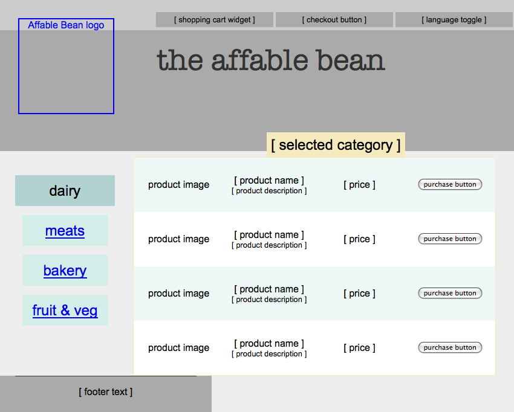
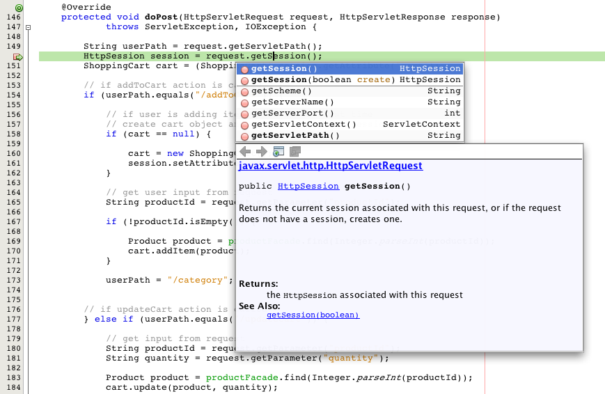

Apache NetBeans
Apache NetBeansLatest release
NetBeans Eコマースのチュートリアル - セッションの管理
| This tutorial needs a review. You can open a JIRA issue, or edit it in GitHub following these contribution guidelines. |

Figure 1. このページの内容は、NetBeans IDEバージョン6.8および6.9に適用されます
なんらかのショッピング・カート機能を提供するすべてのEコマース・アプリケーションでは、ユーザーがWebサイトの中でクリックしたときにユーザー固有のデータを覚える必要があります。開発者にとって残念ですが、インターネットの通信で使用されるHTTPプロトコルは_ステートレス_なプロトコルです。サーバーが受け取る各リクエストは、以前に受け取ったリクエストとは無関係の独立した情報です。このため、顧客がボタンをクリックして自分のショッピング・カートに項目を追加したら、アプリケーションはこのユーザーのカートの状態を更新するのみでなく、このアクションが、同時にサイトをブラウズしているユーザーのカートに影響しないようにする必要があります。
上記のシナリオを適切に処理するには、ユーザーがサイトにアクセスしている間、_セッション_を作成し、セッションを維持できるようにする機能を実装する必要があります。このために、すべてのJavaベースのWebアプリケーションの基盤であるサーブレット・テクノロジには`HttpSession`インタフェースが用意されています。また、セッションが維持されている間、アプリケーションが一時的にユーザー・データを格納できるようにする`ShoppingCart`および`ShoppingCartItem`というクラスを定義する必要があります。
このチュートリアル・ユニットでは、他のNetBeans Eコマースのチュートリアルとは異なる方法を取ります。プロジェクト・ファイルを作成してそのプロジェクトにコピーして貼付けできるコード・スニペットを提供するという手順に従うのではなく、このユニットの完成したプロジェクトのスナップショットを開き、IDEデバッガやその他のツールを使用してコードを調べます。このプロセスの中で、`HttpSession`オブジェクトをコードに適用して、Webサイトへのアクセスごとに専用のセッションを作成する方法を学習します。また、_スコープ指定された変数_について、およびそれをJavaクラスやJSPページで使用する方法についても学習します。このユニットでは、セッションを維持するための`HttpSession`のデフォルト機構(Cookie)についても説明し、ユーザーのブラウザでCookieが非アクティブ化されている場合に必要となる手順を示します。ユニットの最後ではセッション・タイム・アウトについても触れ、リクエストをインターセプトしてセッションが存在するかどうかを確認する単純なフィルタを作成して、セッション・タイム・アウトを処理する方法を示します。
このチュートリアルでビルドするアプリケーションのライブ・デモを、NetBeans Eコマースのチュートリアルのデモ・アプリケーションで表示できます。
| ソフトウェアまたはリソース | 必須バージョン |
|---|---|
Javaバンドル版、6.8または6.9 |
|
バージョン6 |
|
v3またはOpen Source Edition 3.0.1 |
|
バージョン5.1 |
|
スナップショット5 |
*注意: *
-
NetBeans IDEが正常に動作するには、JDK (Java Development Kit)が必要です。上記に一覧表示されているいずれのリソースもインストールされていない場合は、最初にJDKをダウンロードしてインストールするようにしてください。
-
NetBeans IDEのJavaバンドル版には、このチュートリアルでビルドするアプリケーションに必要なJava WebおよびEEテクノロジが含まれています。
-
NetBeans IDEのJavaバンドル版には、このチュートリアルに必要なGlassFishサーバーも含まれています。GlassFishサーバーを別個にダウンロードすることもできますが、NetBeansダウンロードに付属するバージョンを使用すると、IDEに自動的に登録されるので便利です。
-
このチュートリアル・ユニットは、以前のユニットを完了させていなくても進めることができます。そのために、データベースの準備や、IDE、GlassFishおよびMySQL間の接続の確立について説明した設定手順を参照してください。
セッション・データの処理
アプリケーションは、`HttpSession`オブジェクトを使用してユーザー・セッションを管理できます。ユーザー固有のデータを`HttpSession`オブジェクトにバインドして、後でこのデータにアクセスできます。バインドとアクセスの両方のアクションは、Javaクラスから行うことも、EL式のセッション・スコープ指定された変数から行うことも可能です。
HttpSessionオブジェクトの操作
`AffableBean`アプリケーションは`HttpSession`オブジェクトを使用して、複数のリクエストにわたってユーザーを識別します。`HttpSession`オブジェクトを取得するには、特定のリクエストで次のように`getSession()`を使用します。
HttpSession session = request.getSession();そのリクエストのセッション・オブジェクトがまだ存在しない場合、このメソッドは新しいセッションを作成して返します。
セッション・オブジェクトは、リクエスト間でデータを渡すための輸送手段として使用できます。オブジェクトをセッションにバインドするには、`setAttribute`メソッドを使用します。同様に、オブジェクトをセッションから取得するには、`getAttribute`を使用します。たとえば`AffableBean`アプリケーションでは、次の方法でユーザーのショッピング・カートが作成され、ユーザー・セッションにバインドされます。
ShoppingCart cart = new ShoppingCart();
session.setAttribute("cart", cart);セッションからカートを取得するために、次のように`getAttribute`メソッドが適用されます。
cart = (ShoppingCart) session.getAttribute("cart");JSPページでは、セッションにバインドされているオブジェクトにEL式を使用してアクセスできます。上記の例を続けて使用します。「cart」という名前の`ShoppingCart`オブジェクトがセッションにバインドされている場合、次のEL式を使用することでこのオブジェクトにアクセスできます。
${cart}しかし、`ShoppingCart`オブジェクト自体にアクセスしてもほとんど意味がありません。本当に必要なのは、オブジェクトに格納されている値にアクセスするための方法です。プロジェクトのスナップショットで新しい`ShoppingCart`クラスを調べると、次のプロパティが含まれていることがわかります。
-
double total -
int numberOfItems -
List<String, ShoppingCartItem> items
プロパティに対応する取得メソッドがあれば、EL式で単純なドット表記法を使用して個々のプロパティの値にアクセスできます。`cart.jsp`ページを調べると、次のように、ちょうどこの方法で`numberOfItems`の値にアクセスしているのが確認できます。
<p>Your shopping cart contains ${cart.numberOfItems} items.</p>上記の`items`リストのような複数の値を含むプロパティからデータを抽出するために、cart.jsp`ページでは次のように<c:forEach>`ループを使用しています。
<c:forEach var="cartItem" items="${cart.items}" varStatus="iter">
<c:set var="product" value="${cartItem.product}"/>
<tr class="${((iter.index % 2) == 0) ? 'lightBlue' : 'white'}">
<td>
<img src="${initParam.productImagePath}${product.name}.png"
alt="${product.name}">
</td>
<td>${product.name}</td>
<td>
&euro; ${cartItem.total}
<br>
<span class="smallText">( &euro; ${product.price} / unit )</span>
</td>
...
</tr>
</c:forEach>ShoppingCartItem`の`product`プロパティは、カート項目の製品タイプを識別します。上記のループでは、最初に`product`変数を${cartItem.product}`の式に設定することで、これを利用しています。その後、この変数を使用して、名前や価格などの製品に関する情報を取得しています。
Webアプリケーションでのスコープ指定された変数の操作
JSP/サーブレット・テクノロジを扱う場合、アプリケーションのレルム内で使用できる4つのスコープ・オブジェクトがあります。JSPテクノロジには、サーブレットAPIによって定義されるクラスにアクセスできる_暗黙オブジェクト_が実装されています。
| スコープ | 定義 | サーブレット・クラス | JSP暗黙オブジェクト |
|---|---|---|---|
アプリケーション |
Webアプリケーションのグローバル・メモリー |
|
|
セッション |
ユーザー・セッションに固有のデータ |
|
|
リクエスト |
個々のサーバー・リクエストに固有のデータ |
|
|
ページ |
単一のページ(JSPのみ)のコンテキストのみで有効なデータ |
|
|
エディタでプロジェクトの`category.jsp`ファイルを開くと、EL式に`${categories}`、${selectedCategory}`および${categoryProducts}`などの様々なスコープ指定された変数が含まれているのが確認できます。`${categories}`変数はアプリケーション・スコープ指定されており、次のように`ControllerServlet`の`init`メソッドで設定されています。
// store category list in servlet context
getServletContext().setAttribute("categories", categoryFacade.findAll());他の`${selectedCategory}`と`${categoryProducts}`の2つは、`ControllerServlet`からアプリケーションのセッション・スコープに置かれています。例:
// place selected category in session scope
session.setAttribute("selectedCategory", selectedCategory);*注意: *前のチュートリアル・ユニットから続けている場合、${selectedCategory}`と${categoryProducts}`はもともとリクエスト・スコープ内に置かれていたことに気付くかもしれません。前のユニットではこれで問題ありませんでしたが、ここではユーザーがカテゴリ・ページで「add to cart」ボタンをクリックしたらどうなるかを考えてください。サーバーは、現在表示されているカテゴリ・ページを返すことによって、`addToCart`リクエストに応答します。したがって、選択されたカテゴリに関係する`selectedCategory`と`categoryProducts`を知る必要があります。この情報は、リクエストごとに確立するのではなく、複数のリクエストにまたがって保持し、必要なときにアクセスできるように、`category`リクエストからセッション・スコープに置きます。また、カート・ページによって提供される機能を調べます。(機能については後で説明します。)「continue shopping」ボタンを押すと、ユーザーは前に表示されていたカテゴリに戻ります。再度`selectedCategory`変数と`categoryProducts`変数が必要です。
EL式でスコープ指定された変数を参照する場合、(異なるスコープに同じ名前の2つの変数がないと仮定して)変数のスコープを指定する必要はありません。JSPエンジンは4つすべてのスコープをチェックして、最初に一致した変数を返します。たとえば、`category.jsp`にある次の式を見てください。
${categoryProducts}これは、次の式の短縮形です。
${sessionScope.categoryProducts}詳細は、次のリソースを参照してください。
Javaデバッガによるセッション・データの確認
アプリケーションが実行時にどのように動作するかを調べます。IDEのデバッガを使用してコードをステップ実行し、`HttpSession`がどのように作成されるのか、また、後で取得できるように他のオブジェクトをセッション・スコープに置く方法を調べます。
-
このチュートリアル・ユニットのプロジェクト・スナップショットをIDEで開きます。「プロジェクトを開く」(
 )ボタンをクリックし、ウィザードを使用して、このプロジェクトをダウンロードしたコンピュータ上の場所に移動します。前のチュートリアル・ユニットから続けている場合は、このプロジェクト・スナップショットに`ShoppingCart`クラスと`ShoppingCartItem`クラスを含む新しい`cart`パッケージが含まれています。また、次のファイルも変更されています。
)ボタンをクリックし、ウィザードを使用して、このプロジェクトをダウンロードしたコンピュータ上の場所に移動します。前のチュートリアル・ユニットから続けている場合は、このプロジェクト・スナップショットに`ShoppingCart`クラスと`ShoppingCartItem`クラスを含む新しい`cart`パッケージが含まれています。また、次のファイルも変更されています。-
WEB-INF/web.xml -
css/affablebean.css -
WEB-INF/jspf/header.jspf -
WEB-INF/jspf/footer.jspf -
WEB-INF/view/cart.jsp -
WEB-INF/view/category.jsp -
WEB-INF/view/checkout.jsp -
controller/ControllerServlet
-
-
プロジェクトを実行(
 )して、使用しているデータベースとアプリケーション・サーバーで適切に構成されていることを確認します。
)して、使用しているデータベースとアプリケーション・サーバーで適切に構成されていることを確認します。
プロジェクトの実行時にエラーが発生した場合は、データベースの準備や、IDE、GlassFishおよびMySQL間の接続の確立について説明した設定手順をもう一度確認してください。
-
ブラウザでアプリケーションの機能をテストします。前のチュートリアル・ユニットから直接継続している場合は、次のような機能拡張に気付くでしょう。
カテゴリ・ページ
-
初めて「add to cart」をクリックするとショッピング・カートが有効になり、「proceed to checkout」ウィジェットがヘッダーに表示されます。
-
「add to cart」をクリックすると、ヘッダーにあるショッピング・カート・ウィジェットのカート項目の数が更新されます。
-
「view cart」をクリックすると、カート・ページが表示されます。
-
「proceed to checkout」をクリックすると、チェックアウト・ページが表示されます。

Figure 2. ショッピング・カート機能があるカテゴリ・ページ
カート・ページ
-
「clear cart」をクリックすると、ショッピング・カートの項目が空になります。
-
「continue shopping」をクリックすると、前に表示されていたカテゴリ・ページに戻ります。
-
「proceed to checkout」をクリックすると、チェックアウト・ページが表示されます。
-
項目の「quantity」フィールドに1から99までの数字を入力してから「update」をクリックすると、項目の合計と小計が再計算されます。
-
項目の「quantity」フィールドに0を入力してから「update」をクリックすると、表示された表からその項目が除去されます。

Figure 3. ショッピング・カート機能があるカート・ページ
チェックアウト・ページ
-
「view cart」をクリックすると、カート・ページが表示されます。
-
「submit purchase」をクリックすると、(ユーザー固有のデータなしで)確認ページが表示されます。

Figure 4. ショッピング・カート機能があるチェックアウト・ページ
-
「ファイルに移動」ダイアログを使用して、エディタで`ControllerServlet`を開きます。[Alt]-[Shift]-[O] (Macの場合は[Ctrl]-[Shift]-[O])を押してから、ダイアログで「
Controller」と入力して「OK」をクリックします。

Figure 5. 「ファイルに移動」ダイアログを使用した、エディタへのプロジェクト・リソースの速やかな表示
-
`HttpSession`オブジェクトを作成する行(150行目)の`doPost`メソッドにブレークポイントを設定します。ブレークポイントを設定するには、エディタの左マージンをクリックします。

Figure 6. エディタの左マージンのクリックによるブレークポイントの設定
エディタの行番号表示を切り替えるには、左マージンを右クリックして「行番号を表示」を選択します。
-
デバッガを実行します。IDEのメイン・ツールバーにある「プロジェクトをデバッグ」(
 )ボタンをクリックします。GlassFishサーバーが起動(すでに実行中の場合は再起動)し、そのデバッグ・ポート番号でソケットを開きます。アプリケーションの開始ページがブラウザで開きます。
)ボタンをクリックします。GlassFishサーバーが起動(すでに実行中の場合は再起動)し、そのデバッグ・ポート番号でソケットを開きます。アプリケーションの開始ページがブラウザで開きます。
デバッグ・ポート番号は、「サーバー」ウィンドウ(「ツール」>「サーバー」)から表示および変更できます。使用しているサーバーの「Java」タブを選択します。「デバッグ設定」の下の「使用するアドレス」フィールドにポート番号を指定します。
-
アプリケーションの開始ページがブラウザに表示されたら、いずれかのカテゴリ・イメージをクリックしてカテゴリ・ページに移動します。「add to cart」ボタンをクリックすると、次のようにサーバーに`addToCart`リクエストが送信されることを思い出してください。
<form action="addToCart" method="post">ページ・ビューおよびコントローラ・サーブレットの準備で説明したように、ControllerServlet`の`doPost`メソッドは、/addToCart`のURLパターンのリクエストを処理します。このため、ユーザーが「add to cart」ボタンをクリックすると`doPost`メソッドがコールされることを想定できます。
-
カテゴリ・ページで、いずれかのカテゴリの「add to cart」をクリックします。IDEに戻ると、デバッガがブレークポイントで一時停止されていることがわかります。

Figure 7. エディタのブレークポイントで一時停止されたデバッガ
-
`getSession()`へのコールにカーソルを置き、[Ctrl]-[Space]を押してJavadocドキュメントを呼び出します。

Figure 8. [Ctrl]-[Space]の押下によるJavadocドキュメントの呼出し
ドキュメントによると、`getSession()`は現時点でリクエストに関連付けられている`HttpSession`を返し、セッションが存在しない場合、このメソッドは新しいセッション・オブジェクトを作成します。
IDEのJavadocサポートの利用
IDEには、Java EE開発向けのJavadocが組み込まれています。IDEにはJava EE 6 API仕様がバンドルされており、「ヘルプ」>「Javadoc参照」>「Java EE 6」を選択して外部ブラウザで開けます。
IDEにはこの他にも、APIドキュメントに簡単にアクセスできる、次のような様々な機能が含まれています。
-
Javadocウィンドウ: 「ウィンドウ」>「その他」>「Javadoc」を選択します。JavadocウィンドウはIDEの下部領域で開き、エディタのカーソル位置に関連するAPIドキュメントを表示します。
-
Javadoc索引検索: 「ヘルプ」>「Javadoc索引検索」([Shift]-[F1]、Macの場合は[fn]-[Shift]-[F1])を選択します。探しているクラス名を入力してから、一覧表示された結果からクラスを選択します。ウィンドウの下部のペインに、API仕様からクラスの完全な説明が表示されます。
-
エディタのドキュメント・ポップアップ: エディタの特定の要素で[Ctrl]-[Space]を押すと、Javadocドキュメントがポップアップ・ウィンドウに表示されます。「外部ブラウザ」()ボタンをクリックすると、ブラウザでドキュメントが開きます。[Ctrl]-[Space]をコード補完のためにのみ使用する場合は、「ツール」>「オプション」(Macの場合は「NetBeans」>「プリファレンス」)で「オプション」ウィンドウを開いてから「エディタ」>「コード補完」を選択して、ドキュメント・ポップアップを非アクティブ化できます。「ドキュメント・ウィンドウを自動ポップアップ」オプションを選択解除します。
独自の作業をドキュメント化する場合、作成したクラスおよびメソッドにJavadocコメントを追加することを検討してください。ShoppingCart`クラスを開き、クラス・メソッドに追加されているJavadocコメントを確認します。Javadocコメントは、/** … */`区切り文字でマークされています。たとえば、`addItem`メソッドには、メソッドの署名の前に次のようなコメントが入っています。
/**
* Adds a <code>ShoppingCartItem</code> to the <code>ShoppingCart</code>'s
* <code>items</code> list. If item of the specified <code>product</code>
* already exists in shopping cart list, the quantity of that item is
* incremented.
*
* @param product the <code>Product</code> that defines the type of shopping cart item
* @see ShoppingCartItem
*/
public synchronized void addItem(Product product) {これによって開発者(およびプロジェクトにかかわる他の人)が、メソッドについてのJavadocドキュメントを表示できるようになります。これを示すために、[Ctrl]-[7] (Macの場合は[⌘]-[7])で「ナビゲータ」を開き、カーソルを`addItem`メソッドの上に移動します。

Figure 9. ナビゲータでのメソッド上へのカーソルの移動によるJavadocドキュメントの表示
IDEを使用して、一連のJavadoc HTMLページを生成することもできます。「プロジェクト」ウィンドウでプロジェクト・ノードを右クリックし、「Javadocを生成」を選択します。IDEによって、プロジェクトのディレクトリの`dist/javadoc`フォルダにJavadocが生成され、ブラウザにインデックス・ページが表示されます。
Javadocの詳細は、次のリソースを参照してください。
-
`session`変数の上にカーソルを移動します。デバッガは、_それが実行しようとしている_行で一時停止されています。`getSession()`によって返される値は、この時点では`session`変数に保存されておらず、ポップアップには「"`session`"は、現在のコンテキスト内で既知の変数ではありません。」と表示されます。

Figure 10. 変数および式へのカーソルの移動による現在の値の判定
-
エディタの上にあるデバッガ・ツールバーの「ステップ・オーバー」(
 )ボタンをクリックします。この行が実行され、デバッガはファイルの次の行に進みます。
)ボタンをクリックします。この行が実行され、デバッガはファイルの次の行に進みます。
-
再度`session`変数の上にカーソルを移動します。今度は、`session`変数に現在設定されている値を確認します。

NetBeans 6.9では、ポップアップでグレーのポインタ( )をクリックすると、強調表示された要素に含まれている変数の値の一覧を展開できます。
)をクリックすると、強調表示された要素に含まれている変数の値の一覧を展開できます。
-
「ステップ・オーバー」(
)ボタン([F8]、Macの場合は[fn]-[F8])をクリックして`if`文(154行目)に入ります。ブラウザで「add to cart」ボタンをクリックしたばかりなので、`userPath.equals("/addToCart")`の式は`true`として評価されるはずです。
-
[Ctrl]を押しながらマウスでクリックして`userPath.equals("/addToCart")`の式を強調表示します。今度は、強調表示した式の値を示すポップアップが表示されます。

Figure 11. 式の強調表示による現在の値の判定
-
[F8] (Macの場合は[fn]-[F8])を押して次の行(158行目)に進みます。このアプリケーションは、ユーザーが初めてカートに項目を追加するときにのみユーザー・セッションの`ShoppingCart`オブジェクトを作成するように設計されています。このデバッグ・セッションで`addToCart`リクエストが受け取られたのはこれが最初であるため、`cart`オブジェクトは`null`と等しいと想定できます。

Figure 12. Cartオブジェクトはユーザーがショッピング・カートに項目を追加するまで存在しない
-
[F8] (Macの場合は[fn]-[F8])を押して次の行(160行目)に進みます。次に、`ShoppingCart`オブジェクトが作成される160行目で、「ステップ・イン」(
 )ボタンをクリックします。コールされるメソッドにデバッガがステップ・インします。この場合、直接`ShoppingCart`のコンストラクタに移動します。
)ボタンをクリックします。コールされるメソッドにデバッガがステップ・インします。この場合、直接`ShoppingCart`のコンストラクタに移動します。

Figure 13. メソッドにステップ・インして実行時に他のクラスでの実行を追跡する
-
[Ctrl]-[Tab]を押して`ControllerServlet`に戻ります。「コール・スタック」(
 )バッジが160行目に表示されます(現在、デバッガがコール・スタックの上位にあるいずれかのメソッドで一時停止されていることが表示されています)。
)バッジが160行目に表示されます(現在、デバッガがコール・スタックの上位にあるいずれかのメソッドで一時停止されていることが表示されています)。
[Alt]-[Shift]-[3] (Macの場合は[Ctrl]-[Shift]-[3])を押すとIDEの「コール・スタック」ウィンドウが開きます。
-
[F8] (Macの場合は[fn]-[F8])を押して、コードの実行を進めます。デバッガが`ShoppingCart`コンストラクタを完了すると、`ControllerServlet`に戻ります。
`ControllerServlet`の161行目では、新しく作成された`cart`オブジェクトをセッションにバインドします。
session.setAttribute("cart", cart);これを確認するには、デバッガの「変数」ウィンドウを開きます。「ウィンドウ」>「デバッグ」>「変数」を選択するか、[Alt]-[Shift]-[1] (Macの場合は[Ctrl]-[Shift]-[1])を押します。

「session」>「session」>「attributes」ノードを展開すると、セッションにバインドされているオブジェクトを表示できます。上記のイメージでは、現時点でセッションにバインドされている(強調表示された) 2つの項目があります。これらは、それぞれ`ControllerServlet`の83行目と89行目でインスタンス化された`selectedCategory`と`categoryProducts`です。これらの項目は両方とも、以前カテゴリ・イメージをクリックして`ControllerServlet`がカテゴリ・ページのリクエストを処理したときにバインドされました。
-
[F8] (Macの場合は[fn]-[F8])を押して161行目を実行します。`cart`オブジェクトはセッションにバインドされており、「変数」ウィンドウは変更を反映して更新されます。「変数」ウィンドウでは、現在、セッションに3つの属性が含まれていることを確認できます。3つ目の変数は、新しく初期化された`ShoppingCart`オブジェクト(次で強調表示)です。

これまでは、「変数」ウィンドウに一覧表示されたセッションが`HttpSession`セッションを示していることを「証明」しませんでした。前述のように、HttpSession`は実際にはインタフェースであるため、`HttpSession`オブジェクト(セッション・オブジェクト)について説明する場合、実際には`HttpSession`インタフェースを実装するオブジェクトを指しています。「変数」ウィンドウで「`session」の上にカーソルを移動すると、この変数が`HttpSession`オブジェクトを表していることを示すポップアップが表示されます。表示されているように、StandardSessionFacade`型は、GlassFishが`HttpSession`インタフェースを実装するために使用する内部クラスです。Tomcatに詳しいユーザーが「値」列に表示された「`org.apache.catalina」のパスに戸惑うのは、GlassFish Web/サーブレット・コンテナが実はApache Tomcatコンテナの派生クラスであるためです。
新しい`ShoppingCart`がセッションに追加され、リクエストの処理が続行されます。「add to cart」機能の実装を完成させるために、次のアクションが取られます。 * 選択された製品のIDがリクエストから取得される(165行目) * IDを使用して`Product`オブジェクトが作成される(169行目) * `product`を使用して新しい`ShoppingCartItem`が作成される(170行目) * `ShoppingCartItem`が`ShoppingCart`の`items`リストに追加される(170行目)
-
上記で一覧表示された4つのアクションを意識しながら、[F8] (Macの場合は[fn]-[F8])を押して、コードの実行を進めます。デバッガが170行目で一時停止したら一時休止します。
-
セッションにウォッチを作成します。これによって、次の手順で`addItem`メソッドにステップ・インするときに、セッションに含まれている値を表示できるようになります。「変数」ウィンドウでセッションを右クリックして、「固定ウォッチを作成」を選択します。

Figure 14. デバッグ・セッションでのコードのステップ実行による変数のウォッチの作成
または、エディタ内の`session`変数にカーソルを置いてから、右クリックして「新規ウォッチ」を選択します。「新規ウォッチ」ダイアログでは、アプリケーションのデバッグ時に継続的に監視する変数または式を指定できます。(式の場合は、最初に式を強調表示してから、右クリックして「新規ウォッチ」を選択します。)

Figure 15. エディタ内で変数や式を右クリックして「新規ウォッチ」を選択する
`session`変数とそれに含まれるすべての変数の新しいウォッチが作成されます。ウォッチは、「ウォッチ」ウィンドウ(「ウィンドウ」>「デバッグ」>「ウォッチ」)から表示するか、「変数」ウィンドウの左マージンにある「ウォッチ」( )ボタンを切り替えて「変数」ウィンドウの最初の行に表示可能です。
)ボタンを切り替えて「変数」ウィンドウの最初の行に表示可能です。
コードをステップ実行しながら、デバッガで変数を監視できるようになります。これは、たとえば特定の変数の値をたどる場合(そして各手順で「変数」ウィンドウに示される全リストから選択しなくても済むようにする場合)や、調べる必要のある変数が含まれていないクラスに一時的にステップ・インする場合に役立ちます。
-
「ステップ・イン」(
)ボタンをクリックして、`ShoppingCart`の`addItem`メソッドにステップ・インします。
-
53行目まで`addItem`メソッドをステップ実行します。Javadocに記述されているとおり、`addItem`は_「`ShoppingCart`の`items`リストに`ShoppingCartItem`を追加します。指定された`product`の項目がすでにショッピング・カート・リストに存在する場合、その項目の数量が増加します。」_
-
(上記のステップ21で)ウォッチを作成した`session`変数を調べます。51行目の`items.add(scItem)`文によって、`ShoppingCart`の`items`リストに新しい`ShoppingCartItem`が追加されました。これは、セッションに含まれている3つ目の属性(`cart`変数)を調べるとわかります。

この段階で、リクエストのために`HttpSession`が作成される方法、`ShoppingCart`オブジェクトが作成されてセッションにアタッチされる方法、および`ShoppingCartItem`がユーザーの製品選択に基づいて作成され、`ShoppingCart`の`items`のリストに追加される方法を確認できます。残っているアクションは、`category.jsp`ビューへのリクエストの転送のみです。
-
エディタでJSPフラグメント(
header.jspf)を開き、86行目にブレークポイントを設定します。この行には、カート項目の数を表示する、ショッピング・カート・ウィジェット内のEL文が含まれています。

Figure 16. JSPページでデバッガを一時停止できる
-
デバッガ・ツールバーの「続行」(
 )ボタンをクリックします。デバッガは実行が完了するか、別のブレークポイントに達するまで続行されます。この場合、デバッガはヘッダーのJSPフラグメントの86行目で一時停止されます。
)ボタンをクリックします。デバッガは実行が完了するか、別のブレークポイントに達するまで続行されます。この場合、デバッガはヘッダーのJSPフラグメントの86行目で一時停止されます。
注意: JSPページでデバッガを一時停止させるには、ブレークポイントを設定する必要があります。たとえば、`ControllerServlet`がリクエストを適切なビューに転送したとき、デバッガはJSPページ内で自動的に一時停止されません。
-
まだ開いていない場合は「変数」ウィンドウを開きます([Alt]-[Shift]-[1]、Macの場合は[Ctrl]-[Shift]-[1])。Javaクラスとは異なり、JSPページではデバッガで変数や式の上にカーソルを移動してもツールチップは表示_されません_。ただし、コードをステップ実行しながら、「変数」ウィンドウで変数の値を判定できます。では、`${cart.numberOfItems}`の値はどこにあるでしょうか。
-
「変数」ウィンドウで、「暗黙的なオブジェクト」>「pageContext」>「session」>「session」>「attributes」ノードを展開します。これによって、前に`ControllerServlet`をデバッグしていたときのように、セッション・オブジェクトにアクセスできるようになります。上記のステップ21でウォッチを作成したセッションは、実は同じオブジェクトを指しています。ここで、
${cart.numberOfItems}`の値が「`1」と等しいことを確認できます。

「変数」ウィンドウなどのIDEのウィンドウは、いずれもウィンドウのヘッダーを右クリックしてから「ウィンドウを最大化」([Shift]-[Esc])を選択することで最大化できます。
デバッガで、pageContext`の暗黙オブジェクトにアクセスできるようになります。`pageContext`はJSPページのコンテキストを示しており、`HttpServletRequest、HttpSession、`ServletContext`オブジェクトなどの様々なオブジェクトへの直接的なアクセスを提供します。詳細は、Java EE 5チュートリアル: 暗黙オブジェクトを参照してください。
-
セッションの終了(
 )ボタンをクリックします。ランタイムが実行を完了し、デバッグ・セッションが終了します。ブラウザにカテゴリ・ページが完全にレンダリングされ、ページ・ヘッダーにあるショッピング・カート・ウィジェットに1つの項目が含まれているのが確認できます。
)ボタンをクリックします。ランタイムが実行を完了し、デバッグ・セッションが終了します。ブラウザにカテゴリ・ページが完全にレンダリングされ、ページ・ヘッダーにあるショッピング・カート・ウィジェットに1つの項目が含まれているのが確認できます。
IDEデバッガは、プロジェクトが想定どおりに動作しない場合の検査用としてのみでなく、コードに詳しくなるためのツールとしても便利であることがわかるでしょう。他にも、デバッガ・ツールバーには次のような便利なボタンがあります。
-
(
 )ステップ・アウト: 現在のメソッド・コールをステップ・アウトします。呼出しスタックの最上位のメソッド・コールを実行して除去します。
)ステップ・アウト: 現在のメソッド・コールをステップ・アウトします。呼出しスタックの最上位のメソッド・コールを実行して除去します。 -
(
 )カーソルまで実行: カーソルが置かれている行まで実行します。
)カーソルまで実行: カーソルが置かれている行まで実行します。 -
(
 )コードの変更を適用: ファイルを編集してからこのボタンを押すと、ファイルが再コンパイルされ、変更がデバッグ・セッションに反映されます。
)コードの変更を適用: ファイルを編集してからこのボタンを押すと、ファイルが再コンパイルされ、変更がデバッグ・セッションに反映されます。 -
(
 )式をステップ・オーバー: 式のメソッド・コールごとの入力パラメータおよび結果の出力値を表示できるようにします。「ローカル変数」ウィンドウで、前のメソッドの出力値と次のメソッドの入力パラメータを検査できます。次のメソッド・コールがない場合、「式をステップ・オーバー」は「ステップ・オーバー」()コマンドと同様に機能します。
)式をステップ・オーバー: 式のメソッド・コールごとの入力パラメータおよび結果の出力値を表示できるようにします。「ローカル変数」ウィンドウで、前のメソッドの出力値と次のメソッドの入力パラメータを検査できます。次のメソッド・コールがない場合、「式をステップ・オーバー」は「ステップ・オーバー」()コマンドと同様に機能します。
セッション・トラック・オプションの確認
クライアントとサーバー間のセッションをトラックするための慣習的な方法が3つあります。圧倒的に多く使用されているのはCookieです。URL書換えは、Cookieがサポートされていないか無効になっている場合に適用できます。隠しフォーム・フィールドも、複数のリクエストにわたって「状態を維持する」ための手段として使用できますが、これらはフォーム内での使用に制限されます。
AffableBean`プロジェクトでは、カテゴリとカートの両方のページに隠しフィールド・メソッドの例が含まれています。製品項目用に表示する「add to cart」および「update」ボタンには、ボタンがクリックされると製品IDをサーバーに渡す隠しフィールドが含まれています。エディタで`cart.jsp`ページを開くと、<form>`タグに隠しフィールドが含まれているのが確認できます。
<form action="updateCart" method="post">
*<input type="hidden"
name="productId"
value="${product.id}">*
...
</form>このように、製品IDはリクエスト・パラメータとして送信されます。この製品IDは、ユーザーのカート内の項目の数量を変更する必要があるときに、項目を識別するためにサーバーによって使用されます。
サーブレットAPIは、セッションを管理するための高水準な機構を提供します。基本的にこの機構では、リクエストとレスポンスのサイクルごとにクライアントとサーバー間でCookieを作成して渡します。クライアントのブラウザでCookieが使用できない場合、サーブレット・エンジンは自動的にURL書換えに戻ります。次の2つの課題でこの機能を示します。
HTTPモニターによるクライアントとサーバー間の通信の確認
デフォルトでは、サーブレット・エンジンは、Cookieを使用してリクエスト間のセッションを維持および識別します。セッション・オブジェクトごとにランダムな英数字が生成され、一意の識別子として使用されます。この識別子は、「JSESSIONID」Cookieとしてクライアントに渡されます。クライアントがリクエストを作成すると、サーブレット・エンジンは`JSESSIONID` Cookieの値を読み取り、そのリクエストが属しているセッションを判定します。
これを示すために、IDEのHTTPモニターと連携してデバッガを使用します。
-
まず、使用しているサーバーのHTTPモニターをアクティブ化します。「ツール」>「サーバー」を選択します。「サーバー」ウィンドウの左の列で、使用しているサーバー(GlassFish)を選択します。次にメインの列で、「HTTPモニターを有効化」オプションを選択します。

Figure 17. 「HTTPモニターを有効化」オプションの選択によるHTTPモニターのアクティブ化
-
サーバーがすでに実行されている場合は再起動する必要があります。しかし、ここではデバッガを使用する予定であり、デバッガを実行すると異なるポートで通信するためにサーバーが再起動されるため、単にIDEのメイン・ツールバーにある「プロジェクトをデバッグ」(
)ボタンをクリックします。サーバーが再起動し、デバッグ・セッションが開始して、アプリケーションの開始ページがブラウザで開きます。HTTPモニターがIDEの最下部の領域に表示されます。

Figure 18. HTTPモニターがデフォルトでIDEの最下部の領域に表示される
-
上記のイメージで示したように、左の列のAffableBeanレコードをクリックします。左の列でレコードを選択すると、右の(メインの)列がリフレッシュされ、対応するデータが表示されます。上記のイメージの「リクエスト」タブには、リクエストされたURI (
/AffableBean/)およびHTTPメソッド(GET)が表示され、さらにリクエストと一緒に送信された問合せ文字列はなかったことが示されています。
-
「セッション」タブを選択します。「このリクエストの結果、セッションが作成されました」という文が表示されています。これは、サーバーがレスポンスとして`JSESSIONID` Cookieの`Set-Cookie`ヘッダーを送信したためです。また、新しいセッションIDが「セッション・プロパティ」の下に表示されています。後で示すように、セッションIDは`JSESSIONID` Cookieの値です。

Figure 19. セッションの詳細がHTTPモニターの「セッション」タブの下に表示される
サイトの開始ページのリクエストからセッション・オブジェクトが作成された方法について疑問に思うかもしれません。結局、ControllerServlet`は/AffableBean/`の最初のリクエストを処理しておらず、このリクエストが`getSession()`の影響を受ける機会はどこにもありません。それとも、これが行われたのでしょうか。JSPページは、デプロイメント時にサーブレットにコンパイルされることを思い出してください。サーバーにプロジェクトをデプロイすれば、実際にIDEを使用して、サーバー上のJSPのコンパイルされたサーブレットを表示できます。
-
「プロジェクト」ウィンドウで`index.jsp`ファイルを右クリックし、「サーブレットを表示」を選択します。エディタで`index_jsp.java`ファイルが開きます。これは、`index.jsp`ページから自動的にコンパイルされたサーブレットです。
-
このファイルで`getSession`を検索します。[Ctrl]-[F] (Macの場合は[⌘]-[F])を押し、検索バーで「
getSession」と入力してから[Enter]を押します。
[Ctrl]-[F] (Macの場合は[⌘]-[F])は、「編集」>「検索」のキーボード・ショートカットです。

Figure 20. JSPページのコンパイルされたサーブレットに存在するgetSessionメソッド
実は、`getSession`メソッドはコールされます。これが起こる理由は、JSPページにはデフォルトで`pageContext.session`の暗黙オブジェクトが含まれるためです。この動作を非アクティブ化するには、JSPファイルの最初に次のディレクティブを追加します。
<%@page session="false" %>このようにすると、コンパイルされたサーブレットの`getSession`メソッドが除去されます。
サーバー上のコンパイルされたサーブレットの場所を見つけるには、エディタの上にあるサーブレット名のタブ上にカーソルを移動します。ポップアップに、コンピュータ上のファイルへのパスが表示されます。
-
ブラウザで、カテゴリを選択してからカートに項目を追加します。IDEに戻ります。以前に設定した`ControllerServlet`のブレークポイント(150行目)でデバッガは一時停止されます。すべてのブレークポイントは、セッション間で記憶されます。ブレークポイントを除去するには、エディタの左マージンにある「ブレークポイント」(
 )バッジをクリックします。しかし、このプロジェクトにはすでに複数のブレークポイントが設定されているため、「ウィンドウ」>「デバッグ」>「ブレークポイント」でデバッガの「ブレークポイント」ウィンドウを開きます。
)バッジをクリックします。しかし、このプロジェクトにはすでに複数のブレークポイントが設定されているため、「ウィンドウ」>「デバッグ」>「ブレークポイント」でデバッガの「ブレークポイント」ウィンドウを開きます。

Figure 21. 「ブレークポイント」ウィンドウでのプロジェクトのすべてのブレークポイントの表示
「ブレークポイント」ウィンドウから、IDEで開いているプロジェクトで設定されたすべてのブレークポイントを表示してアクションをコールできます。
-
`header.jspf`に設定されたブレークポイントを右クリックして、「削除」を選択します。その後、`ControllerServlet`に設定されたブレークポイントを右クリックして、「無効」を選択します。(この課題の後半で再度有効にします。)
-
「続行」(
)ボタンをクリックします。リクエストの実行が終了し、カートに項目が1つ追加されたカテゴリ・ページがブラウザに表示されます。
-
HTTPモニターの左の列で`addToCart`リクエストを検索して選択すると、メインの列に詳細が表示されます。
昇順ソート( )ボタンをクリックすると、最新のレコードが最上部に表示されます。
)ボタンをクリックすると、最新のレコードが最上部に表示されます。
「リクエスト」タブの下で、リクエストされたURI (/AffableBean/addToCart)、HTTPメソッド(POST)、およびリクエストされたパラメータ(productId`および`submit)を確認してください。

-
「Cookie」タブを選択します。ここでは、`JSESSIONID`という名前のCookieが存在し、クライアントからサーバーに送信されたことを確認できます。Cookieの値は、「セッション」タブの下に表示されたセッションIDと同じです。

Figure 22. HTTPモニターの「Cookie」タブに表示されたCookie
同様に、「ヘッダー」タブをクリックするとCookieが表示されます。これは、「Cookie」がクライアントによって送信されたリクエスト・ヘッダーであるためです。

Figure 23. HTTPモニターの「Cookie」タブに表示されたCookie
リクエストおよびレスポンス・ヘッダーの詳細は、ウィキペディアのHTTPヘッダーの一覧を参照してください。
-
「セッション」タブを選択します。「このリクエストの前にセッションが存在しました」という文が表示されています。また、`cart`属性が「リクエスト後のセッション属性」の下に表示されています。`addToCart`リクエストが初めて処理されるときに`cart`オブジェクトがセッションにバインドされるため、これは理にかなっています。

Figure 24. HTTPモニターの「セッション」タブの下に表示されたセッション属性
以降のいくつかの手順では、「変数」ウィンドウでセッションIDおよび`JSESSIONID` Cookieを確認します。
-
以前に`ControllerServlet`に設定したブレークポイントを再度有効にします。[Alt]-[Shift]-[5] (Macの場合は[Ctrl]-[Shift]-[5])を押して「ブレークポイント」ウィンドウを開き、ブレークポイント・エントリの横にあるチェックボックスをクリックして、再度有効にします。
-
ブラウザで、一覧表示された製品のうちの1つで「add to cart」ボタンをクリックします。
-
IDEに切り替えると、デバッガが`ControllerServlet`に設定されたブレークポイントで一時停止されています。「ステップ・オーバー」(
)ボタンをクリックして、`session`変数をセッション・オブジェクトに割り当てます。
-
「変数」ウィンドウを開き([Alt]-[Shift]-[1]、Macの場合は[Ctrl]-[Shift]-[1])、「session」>「session」を展開します。セッションIDが「
id」変数の値として表示されます。
-
JSESSIONIDCookieを見つけるために、通常は`HttpServletRequest`で`getCookies`メソッドをコールすることで、サーブレットからCookieにアクセスできることを思い出してください。したがってrequestオブジェクトを、「request」>「継承」>「request」>「request」>「継承」>「cookies」と展開します。これで`cookies` ArrayListが表示されます。リストを展開すると`JSESSIONID` Cookieがあり、この値がセッションIDになります。
-
セッションの終了(
)ボタンをクリックして、デバッグ・セッションを終了します。
URL書換えによるセッションの維持
前述のように、サーブレット・エンジンはクライアント・ブラウザでCookieがサポートされているかどうかを検出し、サポートされていない場合は、セッションを維持する手段をURL書換えに切り替えます。これはすべて、クライアントにとって透過的に行われます。開発者にとっては、このプロセスは完全に透過的なわけではありません。
Cookieが無効になっている場合に必ずURL書換えができるようにアプリケーションを実装する必要があります。このために、アプリケーション内でサーブレットが返すURLのすべてに対して、レスポンスの`encodeURL`メソッドをコールします。このようにすると、Cookieが使用できない場合にはセッションIDがURLに付加されるようになります。これを行わないと、URLを変更せずに返すことになります。
たとえば、ブラウザが次のような`AffableBean`の3つ目のカテゴリ(bakery)のリクエストを送信します: category?3。サーバーは次のように、セッションIDをURLに含めて応答します。
/AffableBean/category*;jsessionid=364b636d75d90a6e4d0085119990*?3前述のように、アプリケーションのサーブレットによって返されるすべてのURLをエンコードする必要があります。JSPページはサーブレットにコンパイルされることを思い出してください。JSPページでどのようにURLをエンコードするのでしょうか。JSTLの`<c:url>`タグがこの機能を果たします。以下の課題で、問題と解決法を示します。
-
ブラウザのCookieを一時的に無効にします。Firefoxを使用している場合、「ツール」>「オプション」(Macの場合は「Firefox」>「プリファレンス」)を選択します。表示されたウィンドウで「プライバシー」タブを選択してから、表示されたドロップダウンで「記憶させる履歴を詳細設定する」を選択します。「サイトから送られてきたCookieを保存する」オプションを選択解除します。

Figure 25. ブラウザでの一時的なCookieの無効化
-
`AffableBean`プロジェクトを実行します。開始ページが表示されたら、カテゴリをクリックしてからカートに項目を追加してみてください。現状ではアプリケーションがまったく機能しません。

Figure 26. クライアントがCookieを受け入れない場合、アプリケーションは機能しない
以前と同様に、サーバーはセッションを生成して、そのセッションにオブジェクトをバインドします。このようにして、選択されたカテゴリおよび製品をカテゴリ・ページに表示できます。しかし、サーバーは`JSESSIONID` Cookieの設定に失敗しました。したがって、クライアントが2つ目のリクエストを作成したとき(ユーザーが「add to cart」をクリックしたとき)、サーバーにはリクエストが属しているセッションを識別する方法がありません。このため、以前にセッションで設定された`selectedCategory`や`categoryProducts`などの属性をいずれも見つけることができません。このような理由により、レスポンスのレンダリングにはこれらの属性によって指定される情報が欠如しています。
-
エディタでプロジェクトの`category.jsp`ページを開きます。「add to cart」ボタンを実装する行(58行目)を見つけます。`<form>`要素の`action`属性によって、サーバーに送信されるリクエストが決まります。
<form action="addToCart" method="post">-
リクエストを変更して、`<c:url>`タグを通して渡されるようにします。
<form action="*<c:url value='addToCart'/>*" method="post">-
[Ctrl]-[S] (Macの場合は[⌘]-[S])を押して、ファイルへの変更を保存します。IDEは、デフォルトで有効な「保存時にデプロイ」機能が備わっていることを思い出してください。これによって、保存された変更はすべて自動的にサーバーにデプロイされます。
-
ブラウザで異なるカテゴリを選択して、新しく変更されたカテゴリ・ページをアプリケーションにレンダリングさせます。
-
このページのソース・コードを調べます。Firefoxでは[Ctrl]-[U] (Macの場合は[⌘]-[U])を押します。各製品の「add to cart」ボタンに、URLに付加されたセッションIDが一緒に表示されています。
<form action="addToCart*;jsessionid=4188657e21d72f364e0782136dde*" method="post">-
いずれかの項目で「add to cart」ボタンをクリックします。サーバーが、リクエストが属しているセッションを判定して、適切にレスポンスをレンダリングできるようになっていることを確認できます。
-
次に進む前に、ブラウザでCookieを再度有効にしてください。
前述のように、アプリケーション内でユーザーがクリックできるすべてのリンクは、そのレスポンスがなんらかの形式のセッション関連のデータを必要とする場合、適切にエンコードされる必要があります。上記の例ほど実装が単純ではない場合もあります。たとえば、`cart.jsp`で使用されている「clear cart」ウィジェットは、現時点ではリンクがクリックされると`clear`パラメータを`true`に設定します。
<%-- clear cart widget --%>
<c:if test="${!empty cart && cart.numberOfItems != 0}">
<a href="viewCart*?clear=true*" class="bubble hMargin">clear cart</a>
</c:if>`<c:url>`タグは、次の方法でURLに適用できます。
<%-- clear cart widget --%>
<c:if test="${!empty cart && cart.numberOfItems != 0}">
*<c:url var="url" value="viewCart">
<c:param name="clear" value="true"/>
</c:url>*
<a href="*${url}*" class="bubble hMargin">clear cart</a>
</c:if>clear=true`パラメータは、<c:url>`タグ間に`<c:param>`タグを追加することで設定されます。「url」という名前の変数が<c:url> の`var`属性を使用して設定された後、var`が${url}`式を使用してHTMLアンカー・タグでアクセスされます。
スナップショット6をダウンロードして調べれば、プロジェクトのすべてのリンクがどのようにエンコードされているかを確認できます。
URL書換えは、トラック・メソッドとしてCookieが使用できない場合にのみ使用する必要があります。セッションIDがブラウザのアドレス・バーのみでなく、ログ、ブックマーク、リファラ・ヘッダーおよびキャッシュされたHTMLに表示されるため、通常はURL書換えは次善手段と見なされています。また、受信リクエストごとにURLからセッションIDを抽出して、既存のセッションと組み合せるためのサーバーの追加手順が必要なため、サーバー側リソースも多く必要になります。
セッション・タイム・アウトの処理
セッションの時間間隔の設定
サーバーがセッションを維持する時間間隔の最大値について考慮する必要があります。Webサイトのトラフィックが多くなると、多数のセッションによってサーバーのメモリー・キャパシティが使い果たされる可能性があります。このため、使用されていないセッションを除去できるように、時間間隔を短くできます。一方で、セッションが短すぎると使い勝手が悪くなり、Webサイトの背後にあるビジネスに悪影響を与える可能性があります。これは避ける必要があります。`AffableBean`アプリケーションの例で考えると、ユーザーがショッピング・カートに多くの項目を入れてからチェックアウトに進むとします。その後、クレジット・カードの詳細を入力する必要があることがわかり、財布を探しにいきます。クレジット・カードを持ってコンピュータに戻ってから、チェックアウト・フォームに入力して「submit」をクリックします。しかしこの間に、このユーザーのセッションはサーバーで有効期限切れになっていました。ショッピング・カートは空になり、ユーザーはホーム・ページにリダイレクトされます。このユーザーは、再度時間をかけて同じプロセスを実行するでしょうか。
次の手順では、`AffableBean`プロジェクトのセッション・タイム・アウトの間隔を10分に設定する方法を示します。言うまでもなく実際の間隔は最終的に、サーバー・リソース、業務におけるアプリケーションの目標、およびWebサイトの需要によって決まります。
-
エディタでアプリケーションのデプロイメント・ディスクリプタを開きます。[Alt]-[Shift]-[O] (Macの場合は[Ctrl]-[Shift]-[O])を押して、IDEの「ファイルに移動」ダイアログを使用します。「
web」と入力してから「OK」をクリックします。

Figure 27. 「ファイルに移動」ダイアログを使用した、プロジェクト・ファイルへの速やかな移動
エディタの「XML」ビューに`web.xml`ファイルが表示されます。NetBeansが`web.xml`ファイルに提供しているテンプレートでは、デフォルトとして30分が設定されています。
<session-config>
<session-timeout>
30
</session-timeout>
</session-config>-
「一般」タブをクリックして、「セッション・タイム・アウト」フィールドに「
10」と入力します。

Figure 28. web.xmlの「一般」タブでの、アプリケーションのセッション・タイムアウトの指定
-
ファイルを保存します([Ctrl]-[S]、Macの場合は[⌘]-[S])。
「XML」ビューに戻ると、`<session-timeout>`要素が更新されていることを確認できます。
<session-config>
<session-timeout>10</session-timeout>
</session-config>*注意: *かわりに、<session-timeout>`要素をすべて除去し、GlassFish固有のデプロイメント・ディスクリプタ(`sun-web.xml)で`session-properties`要素を編集することもできます。これを行うと、サーバーのWebモジュールにあるすべてのアプリケーションのグローバル・タイム・アウトが設定されます。詳細は、Oracle GlassFish Server 3.0.1アプリケーション開発ガイド: セッションの作成および管理を参照してください。
プログラムによるセッション・タイム・アウトの処理
アプリケーションがセッションに依存している場合、タイム・アウトしたセッションや識別できないセッションに対するリクエストを受け取ったときにも正常に処理できるようにする必要があります。`AffableBean`アプリケーションでこれを実現するには、`ControllerServlet`に送信されたリクエストをインターセプトする単純なフィルタを作成します。このフィルタはセッションが存在するかどうかをチェックして、存在しなければリクエストをサイトの開始ページに転送します。
-
まず、ユーザーがサイトにアクセスしている途中でセッションがタイム・アウトする場合に起こる問題を調べます。一時的に、セッション・タイム・アウトの間隔を1分にリセットします。Webデプロイメント・ディスクリプタ(
web.xml)を開き、<session-timeout>`タグの間に「`1」を入力します。
<session-config>
<session-timeout>*1*</session-timeout>
</session-config>-
`AffableBean`プロジェクトを実行します。ブラウザでカテゴリ・ページをクリックして、項目をいくつかカートに追加してから「view cart」をクリックします。

Figure 29. カート・ページにはセッション・オブジェクトに応じてショッピング・カートの項目が表示される
-
少なくとも1分間待ちます。
-
カート・ページに表示された項目のうち、1つの項目の数量を更新します。(1から99までのいずれかの数字を入力できます。)「update」をクリックします。サーバーからHTTPステータス500のメッセージが返されます。

Figure 30. 有効期限切れセッションに対するリクエストを受信するとNullPointerExceptionが発生する
-
IDEでGlassFishサーバー・ログを調べます。「出力」ウィンドウ([Ctrl]-[4]、Macの場合は[⌘]-[4])を開き、「GlassFish Server」タブを選択します。ログの最下部までスクロールして、エラーのスタック・トレースを調べます。

サーバー・ログに、`ControllerServlet`の184行目で`NullPointerException`が発生したことが示されています。「出力」ウィンドウには、例外が発生した行へのリンクが表示されます。
-
リンクをクリックします。`ControllerServlet`の184行目に直接移動します。エディタの左マージンにあるエラー・バッジの上にカーソルを置くと、例外を説明するツールチップが表示されます。

Figure 31. エラー・バッジとツールチップによる問題の場所および原因の提示
リクエストを受け取る前にセッションがすでに有効期限切れになっていたため、サーブレット・エンジンは、対応するセッションにリクエストを関連付けることができませんでした。このため、`cart`オブジェクトを見つけられませんでした(151行目)。最終的に184行目で、`null`と等しい変数のメソッドをエンジンがコールしようとしたときに例外が発生しました。
これで問題を特定できたので、フィルタを実装して修正しましょう。
-
IDEのメイン・ツールバーにある「新規ファイル」(
 )ボタンをクリックします。または、[Ctrl]-[N] (Macの場合は[⌘]-[N])を押します。
)ボタンをクリックします。または、[Ctrl]-[N] (Macの場合は[⌘]-[N])を押します。
-
「Web」カテゴリから「フィルタ」を選択し、「次」をクリックします。
-
フィルタに「
SessionTimeoutFilter」という名前を付けます。「パッケージ」フィールドに「filter」と入力して、フィルタ・クラスが作成時に新しいパッケージに配置されるようにします。
-
「次」をクリックします。デフォルトの設定を受け入れ、「終了」をクリックします。`SessionTimeoutFilter`のテンプレートが生成され、エディタで開きます。
注意: NetBeans 6.9の時点では、ウィザードを使用してWebデプロイメント・ディスクリプタに登録されていないサーブレットへのマッピングを設定できません。(ControllerServlet`は@WebServlet`注釈を使用して登録されています。)このため、生成されたコードを次の手順で変更します。
-
`@WebFilter`注釈署名を次のように変更します。
@WebFilter(*servletNames = {"Controller"}*)
public class SessionTimeoutFilter implements Filter {これによって、`ControllerServlet`が処理するすべてのリクエストをインターセプトするようにフィルタが設定されます。(または、`urlPatterns`属性を保持して、`ControllerServlet`が処理するすべてのパターンをリストすることもできます。)
サーブレットの`@WebServlet`注釈署名に指定されているように、「Controller」は`ControllerServlet`の名前です。また、フィルタ・クラスの名前がデフォルトで使用されているため、`filterName`属性は除去しています。
IDEのフィルタ・テンプレート自体に、調べる価値のある有用なコードが多く含まれています。ただし、そのほとんどはここでの目的には不要なものです。どのフィルタ・クラスも、次の3つのメソッドを定義する`Filter`インタフェースを実装する必要があります。
* init: フィルタが初期化されてから使用が開始されるまでの間に、任意のアクションを実行します。
* destroy: 使用を停止してフィルタを除去します。このメソッドは、任意のクリーン・アップ操作を実行するためにも使用できます。
* doFilter: フィルタがインターセプトするリクエストごとの操作の実行に使用されます。
Filter`インタフェースに関するドキュメントを参照するには、「Javadoc索引検索」を使用します。[Shift]-[F1] (Macの場合は[fn]-[Shift]-[F1])を押してから、検索フィールドに「`Filter」と入力して[Enter]を押します。「Interface in javax.servlet」エントリを選択します。索引検索ツールの下部のペインに、Javadocドキュメントが表示されます。
-
`SessionTimeoutFilter`の本文を、次の内容に置き換えます。
@WebFilter(servletNames = {"Controller"})
public class SessionTimeoutFilter implements Filter {
*public void doFilter(ServletRequest request, ServletResponse response, FilterChain chain)
throws IOException, ServletException {
HttpServletRequest req = (HttpServletRequest) request;
HttpSession session = req.getSession(false);
// if session doesn't exist, forward user to welcome page
if (session == null) {
try {
req.getRequestDispatcher("/index.jsp").forward(request, response);
} catch (Exception ex) {
ex.printStackTrace();
}
return;
}
chain.doFilter(request, response);
}
public void init(FilterConfig filterConfig) throws ServletException {}
public void destroy() {}*
}-
[Ctrl]-[Shift]-[I] (Macの場合は[⌘]-[Shift]-[I])を押してインポート文を修正します。(
HttpServletRequest`および`HttpSession`のためのインポートの追加が必要。)また、エディタのヒントを使用して`init、destroy`および`doFilter`メソッドに@Override`注釈を追加します。
以降の手順では、プロジェクトでデバッガを実行して`doFilter`メソッドをステップ実行し、リクエストが既存のセッションにバインドされているかどうかをこのメソッドが判定する方法を確認します。
-
「ブレークポイント」ウィンドウを開き([Alt]-[Shift]-[5]、Macの場合は[Ctrl]-[Shift]-[5])、既存のブレークポイントが設定されていないことを確認します。ブレークポイントを削除するには、ブレークポイントを右クリックして「削除」を選択します。(前述の課題であるHTTPモニターによるクライアントとサーバー間の通信の確認を完了した場合は、`ControllerServlet`に未処理のブレークポイントが設定されている可能性があります。)
-
デバッガを実行します。IDEのメイン・ツールバーにある「プロジェクトをデバッグ」(
)ボタンをクリックします。
-
ブラウザに開始ページが表示されたら、カテゴリを選択してからショッピング・カートにいくつか項目を追加します。
-
`SessionTimeoutFilter`の`doFilter`メソッドで、セッションへのアクセスを試行する行(32行目)にブレークポイントを設定します。

Figure 32. getSessionメソッドへのブレークポイントの設定
-
ブラウザで「view cart」ボタンをクリックします。IDEに切り替えると、デバッガがブレークポイントで一時停止されていることがわかります。
その時点でセッション・オブジェクトが存在しない場合、`getSession()`は新しいセッション・オブジェクトを作成することを思い出してください。ここでは、オブジェクトが見つからなくても新規作成を行わない`getSession(false)`を使用します。つまり、セッションが存在しない場合、メソッドは`null`を返します。
-
「ステップ・オーバー」(
)ボタンをクリックしてから、`session`変数の上にカーソルを移動します。前回のリクエストが送信されてから1分が経過していなければ、変数が`StandardSessionFacade`に割り当てられていることを確認できます。これは、リクエストのセッション・オブジェクトを表します。

Figure 33. 変数へのカーソルの移動によるその現在値の判定
-
リクエストが処理されるまで、メソッドをステップ実行し続けます。`session`は`null`と等しくないため、`if`文をスキップすると、`chain.doFilter`はリクエストを`ControllerServlet`に転送します(44行目)。
-
ブラウザで、1分間が過ぎたことを確認してから、カートの製品項目のうちの1つの数量を更新します。この手順は、この課題の最初の方で実行してステータス500のメッセージが返されたときと同じ手順です。ここでは、`ControllerServlet`に送信されたリクエストをフィルタがインターセプトするようになったので、セッション・タイム・アウトが起きるとどうなるかを確認しましょう。
-
「update」をクリックしてからIDEに切り替えると、フィルタに設定されたブレークポイントでデバッガが再度一時停止されています。
-
`req.getSession(false)`の式を強調表示してから、この上にカーソルを移動します。ここでは、セッションがすでに有効期限切れになっているため、式が`null`と等しいことが確認できます。

Figure 34. 強調表示した式へのカーソルの移動によるその現在値の判定
-
続けてコードをステップ実行します。ここでは、
session`変数が`null`と等しくなっているため、35行目の`if`文が処理され、リクエストが/index.jsp`に転送されます。デバッガが実行を終了すると、ブラウザにサイトの開始ページが表示されます。
-
セッションの終了(
)ボタンをクリックして、デバッグ・セッションを終了します。
-
プロジェクトの`web.xml`ファイルを開き、セッション・タイム・アウトの間隔を10分に戻します。
<session-config>
<session-timeout>*10*</session-timeout>
</session-config>-
ファイルを保存([Ctrl]-[S]、Macの場合は[⌘]-[S])します。
スナップショット6は、このチュートリアル・ユニットのプロジェクトの完成版を示しています。最後に、セッション管理に関する1つのトピックについて説明します。セッション・オブジェクトで`invalidate`メソッドをコールすることで、セッションを明示的に終了させることができます。セッションが不要になったら、サーバーが使用するメモリーを節約するために、そのセッションは除去するようにしてください。次のユニットであるビジネス・ロジックの取引の統合を完了すると、顧客の注文を正常に処理したときに`ControllerServlet`が`invalidate`メソッドを使用してどのようにユーザーの`cart`オブジェクトを破棄し、セッションを終了するかがわかります。
// if order processed successfully send user to confirmation page
if (orderId != 0) {
// dissociate shopping cart from session
cart = null;
// end session
session.invalidate();
...
}これは、プロジェクト・スナップショット8 (およびそれ以降のスナップショット)に示されています。
link:/about/contact_form.html?to=3&subject=Feedback: NetBeans E-commerce Tutorial - Managing Sessions[ご意見をお寄せください]